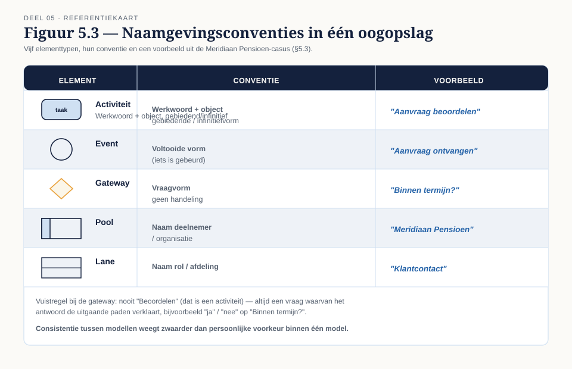
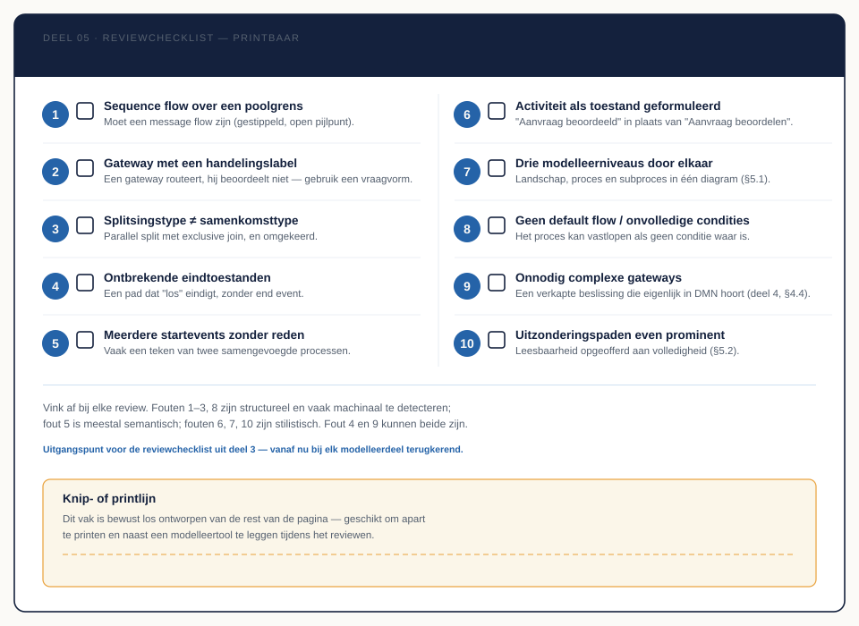

Deel 5 — Modelleerdiscipline en stijl
Reader · Ductus-cursus BPMN, CMMN & DMN · niveau 1 (fundament) · deel 5 van 30 · studielast ± 4 uur
Dit materiaal bereidt voor op het examen OCEB 2 Fundamental van de Object Management Group. Het is geen vervanging van het officiële examenmateriaal en de specificaties van OMG.
Leerdoelen
Na dit deel kun je:
- De drie niveaus van procesmodellering (landschap, proces, subproces) onderscheiden en een model op het juiste niveau plaatsen.
- De modelleerdiscipline "happy path eerst, uitzonderingen daarna" toepassen op een bestaand model.
- Naamgevingsconventies voor activiteiten, events en gateways consequent toepassen.
- Een model structureel, semantisch en stilistisch valideren.
- De tien meest gemaakte modelleerfouten herkennen in andermans werk en in je eigen werk.
5.1 Drie niveaus van procesmodellering
Bruce Silver, een van de invloedrijkste auteurs over BPMN-praktijk, onderscheidt drie niveaus waarop je een proces kunt tonen. Het onderscheid lost een probleem op dat in deel 3 en 4 al zichtbaar werd: hoeveel detail hoort in één diagram?
- Niveau 1 — landschap. Een overzicht van hoofdprocessen en hun onderlinge samenhang, zonder interne stappen. Vergelijkbaar met de procesarchitectuur uit deel 2, §2.2, maar dan als BPMN-collaboration diagram met collapsed pools.
- Niveau 2 — proces. Het niveau waarop dit programma tot nu toe grotendeels heeft gewerkt: activiteiten, events en gateways binnen één proces, leesbaar voor een businesspubliek.
- Niveau 3 — subproces. Het detailniveau binnen een collapsed subprocess, waar de stappen preciezer worden — dichter bij wat nodig is voor specificatie of uitvoering.
De fout die het vaakst voorkomt: alle drie de niveaus in één diagram proppen. Een landschapsplaat met individuele user tasks erop is niet gedetailleerder, hij is onleesbaar — het publiek dat een landschap nodig heeft, wil geen taken zien, en het publiek dat taken nodig heeft, heeft geen landschap nodig. Bepaal bij elk model eerst het niveau, dan pas de inhoud.
5.2 Happy path eerst, uitzonderingen daarna
Deze regel kwam al kort voorbij in deel 3, §3.7, en verdient hier de volledige aandacht die hij verdient, juist omdat deel 4 een verleiding toevoegde: met alle eventtypen en gatewaytypes van de analytic subclass beschikbaar, is de neiging groot om meteen alle uitzonderingen mee te modelleren.
De werkwijze blijft: eerst het pad zonder afwijkingen volledig neerzetten, herkenbaar en leesbaar op zichzelf. Pas daarna uitzonderingen toevoegen, één voor één, en na elke toevoeging controleren of de happy path nog steeds als eerste opvalt. Een lezer die het diagram opent, moet binnen enkele seconden kunnen zien wat het proces normaal gesproken doet — uitzonderingen zijn per definitie de minderheid van de gevallen en horen dat ook visueel te zijn.
Praktisch middel: gebruik voor uitzonderingspaden bewust meer marge, minder centrale plaatsing, en waar mogelijk een aparte kleur of visuele markering (afhankelijk van wat de tool ondersteunt) om ze te onderscheiden van de hoofdlijn. Een model waarin het foutpad even prominent staat als het succespad, dwingt de lezer om alle paden even zorgvuldig te lezen om te begrijpen wat "normaal" is — en dat is precies de leesbaarheid die je wilde bewaren.
5.3 Naamgevingsconventies
Deel 3 en 4 introduceerden de losse regels; hier staan ze samen, als één consistent stelsel.
| Elementtype | Conventie | Voorbeeld |
|---|---|---|
| Activiteit | Werkwoord + object, gebiedende/infinitiefvorm | "Aanvraag beoordelen" |
| Event | Voltooide vorm (iets is gebeurd) | "Aanvraag ontvangen" |
| Gateway | Vraagvorm, geen handeling | "Binnen termijn?" |
| Pool | Naam van de deelnemer/organisatie | "Meridiaan Pensioen" |
| Lane | Naam van de rol of afdeling | "Klantcontact" |
De gatewayconventie verdient aandacht: een gateway heet nooit "Beoordelen" (dat is een activiteit, zie deel 3, §3.5) maar krijgt een vraag waarvan het antwoord de condities op de uitgaande paden verklaart. "Binnen termijn?" met paden "ja" en "nee" is eenduidiger dan een naamloze gateway met paden die de vraag zelf moeten dragen.
Een tweede, organisatiebrede afspraak: consistentie tussen modellen weegt zwaarder dan persoonlijke voorkeur binnen één model. Twee modelleurs die "Aanvraag beoordelen" en "Beoordeel de aanvraag" door elkaar gebruiken, leveren op zichzelf beide leesbare modellen, maar een bibliotheek van honderd processen met wisselende stijl oogt onprofessioneel en is moeilijker te doorzoeken. Dit is precies waarom niveau 2 van dit programma (deel 11) een eigen module wijdt aan het vastleggen van een organisatiebrede modelleerrichtlijn.
5.4 Drie soorten validatie
Een model kan op drie, onafhankelijke manieren fout zijn:
- Structureel — het model overtreedt de regels van de notatie zelf: sequence flow over een poolgrens, een parallel split met een exclusive join, een activiteit zonder uitgaande flow. Dit soort fouten is in principe machinaal te detecteren en de meeste moderne tools (waaronder Conductus) waarschuwen hiervoor automatisch.
- Semantisch — het model is notatietechnisch correct, maar klopt niet met de werkelijkheid die het beschrijft. Een stap ontbreekt, een conditie dekt niet alle gevallen, de volgorde klopt niet met wat er echt gebeurt. Dit is niet machinaal te detecteren; het vereist iemand die het echte proces kent.
- Stilistisch — het model is structureel en semantisch correct, maar slecht leesbaar: inconsistente naamgeving, een landschap vermengd met detail (§5.1), geen duidelijke happy path (§5.2), te veel elementen voor het gekozen gebruiksdoel (deel 1, §1.4).
Deze drie zijn onafhankelijk van elkaar: een model kan structureel foutloos en semantisch correct zijn, en toch onbruikbaar door slechte stijl. Een reviewproces dat alleen op structurele correctheid checkt — wat een tool automatisch kan — mist de andere twee, en dat zijn precies de twee die het meeste tijd kosten om te herstellen als ze pas laat worden ontdekt.
5.5 De tien meest gemaakte modelleerfouten
Een verzamellijst, grotendeels opgebouwd uit wat in deel 3 en 4 al apart is behandeld, hier samengebracht als één checkinstrument:
- Sequence flow over een poolgrens — moet message flow zijn.
- Gateway met een handelingslabel — een gateway routeert, hij beoordeelt niet.
- Splitsingstype en samenkomsttype die niet overeenkomen — parallel split met exclusive join en omgekeerd.
- Ontbrekende eindtoestanden — een pad dat "los" eindigt zonder end event.
- Meerdere startevents zonder duidelijke reden — vaak een teken van twee samengevoegde processen.
- Activiteit als toestand geformuleerd — "Aanvraag beoordeeld" in plaats van "Aanvraag beoordelen".
- Alle drie de modelleerniveaus in één diagram — landschap, proces en subproces door elkaar (§5.1).
- Geen default flow en geen volledige conditieset op een exclusive gateway — het proces kan vastlopen als geen conditie waar is.
- Onnodig complexe gateways — waar de onderliggende logica een verkapte beslissing is die in DMN hoort (deel 4, §4.4, en deel 8).
- Uitzonderingspaden even prominent als de happy path — leesbaarheid opgeofferd aan volledigheid (§5.2).
Deze lijst is het uitgangspunt voor de reviewchecklist die in deel 3 is geïntroduceerd en die vanaf nu bij elk modelleerdeel terugkeert, uitgebreid met de elementen uit dit deel.
Kernbegrippen
Landschap- / proces- / subprocesniveau — de drie niveaus van procesmodellering (Silver) · Happy path — het pad zonder afwijkingen · Structurele / semantische / stilistische validatie — de drie onafhankelijke manieren waarop een model kan falen · Modelleerrichtlijn — een organisatiebrede afspraak over stijl en naamgeving
Examenrelevantie — OCEB 2 Fundamental
Dit deel is minder rechtstreeks examenstof dan deel 3 en 4, maar de reviewvaardigheid die hier wordt geoefend is precies wat het examen toetst bij vragen die een diagram tonen en vragen wat er fout is. Beschouw dit deel als de brug tussen "de elementen kennen" en "een diagram correct kunnen beoordelen".
Leeswijzer bij de specificatie
- BPMN 2.0.2 — geen apart hoofdstuk over stijl; de specificatie beschrijft syntax, niet leesbaarheid. Aanbevolen achtergrond (niet examenstof): Bruce Silver, BPMN Method and Style, voor de driedeling in modelleerniveaus die in §5.1 wordt gebruikt.
Figurenlijst




